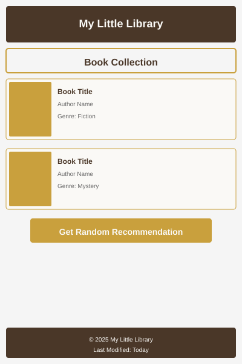
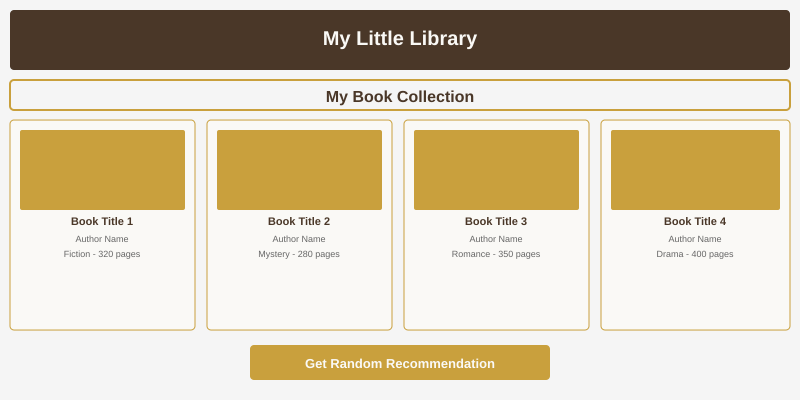

Site Name
My Little Library
This name represents a personal, cozy home library catalog. "My Little Library" suggests a small but curated collection of books that are meaningful to the owner. It feels warm, approachable, and personal.
my-little-library.netlify.appSite Purpose
The website serves as a digital catalog for a personal home book collection. It displays books in a responsive grid layout with titles, authors, and genres. A simple JavaScript feature allows users to click a button and receive a random reading recommendation from the catalog.
Scenarios
What books are in my home library right now?
I can't decide what to read next. Can you recommend something?
How many books do I have in each genre?
Color Schema
Warm Beige (#F5E6D3): Background color for the entire page (creates a warm, book-like paper feel)
Deep Brown (#4A3728): Headers, footer, and button backgrounds (evokes leather-bound books)
Soft Gold (#C9A03D): Accents, hover effects, and the random recommendation button (adds a touch of elegance)
Off White (#FAF9F6): Book card backgrounds (makes text readable and mimics book pages)
Dark Gray (#2C2C2C): Body text and book titles (ensures good readability)
Typography
Playfair Display: Used for all headings (h1, h2, h3) - this serif font feels classic and literary
Open Sans: Used for body text, paragraphs, and book details - this sans-serif font is clean and highly readable on screens
Mobile Wireframe (max-width: 640px)

Mobile layout: Single column of book cards. Header at top, book grid in middle, footer at bottom. Button for random recommendation appears below the grid.
Desktop Wireframe (min-width: 641px)

Desktop layout: 3-4 columns of book cards. Header at top, book grid filling the main area, random recommendation button placed prominently near the top or sidebar.